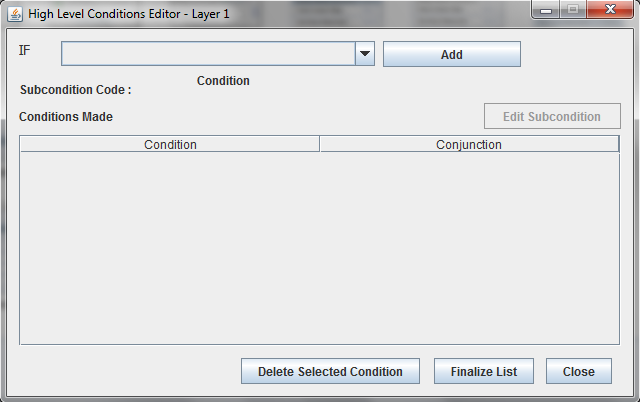
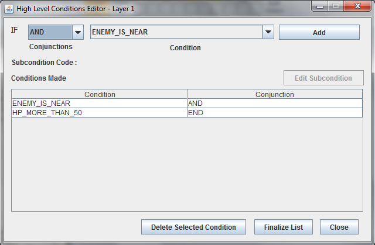
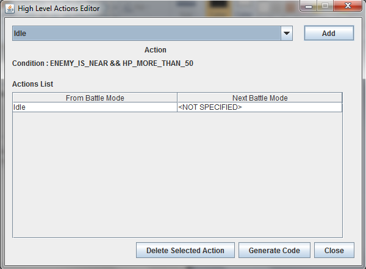

Strategies
Strategies are actions undertaken by the bot given certain conditions. They are arranged by priority, that as long as the first strategy is true, it will continue to do so. If not true, the next priority strategy is checked.
To add an entry to the Strategy, select an existing Battle Mode and press the [+] button to the right of the Strategy Triggers.


The condition editor will appear. Conditions can be treated as layers, which means one can have nested-if statements. (i.e. condition1AND(condition2ORcondition3) )
The parameters are as follows:
Condition drop-down: Allows you to choose one of the existing conditions in the database. Choose SUBCONDITION if you want to use nested conditions.
Conjunctions: Let's you choose among AND, OR, or END. the first two should be familiar logical operations. To end the conditions you want, select END to finish with the last condition. So given condition1ANDcondition2ORcondition3, it will look like condition1 AND condition2 OR condition3 END.
Add: When you're done with the previous two, press this to add it to the list.
Delete Selected Condition: The selected entry on the table will be deleted.
Finalize List: Can only be used when the END conjunction has been used. This signifies the end of the condition set.
Close: Goes back to main window.
After Finalizing...

...you will be at the High Level Actions Editor. This dictates the actions to be done by the bot at that condition.
Action DropDown: Select from a list of actions available.
Add: appends the selected action to the table.
Delete Selected Condition: The selected entry on the table will be deleted.
Generate Code: Appends the action to the main window.
Close: Goes back to main window.
Copyright © 2010, DGDL/LIC
Created with the Freeware Edition of HelpNDoc: Easily create CHM Help documents